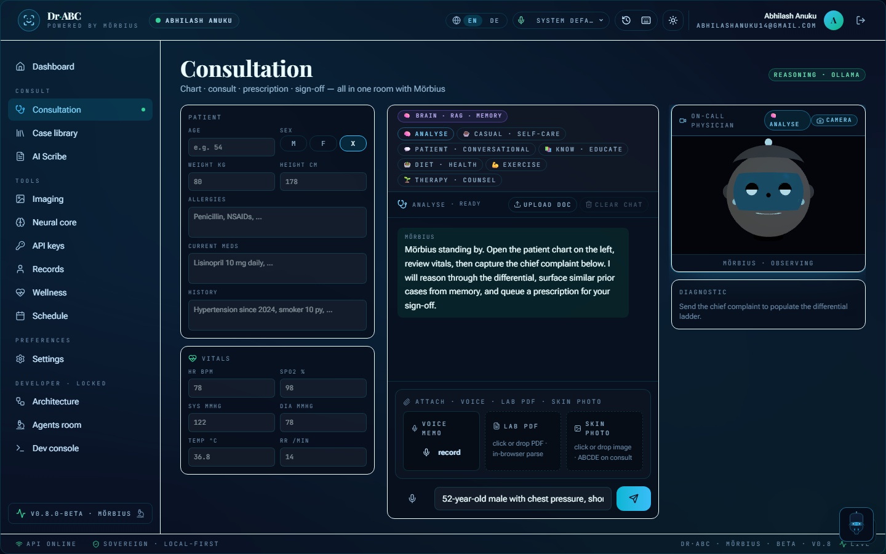
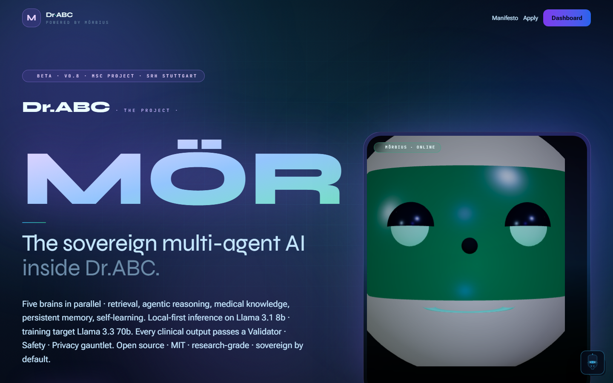
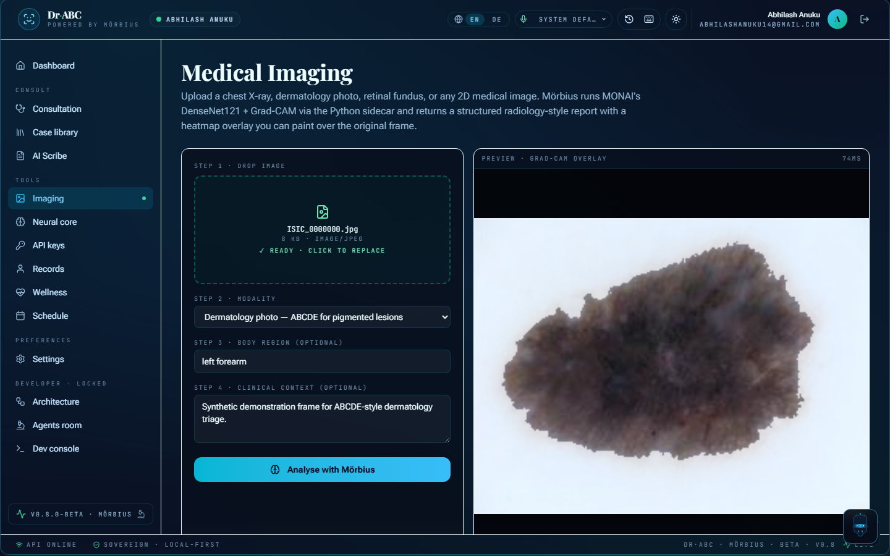
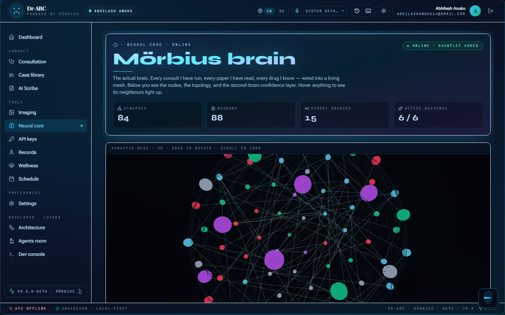
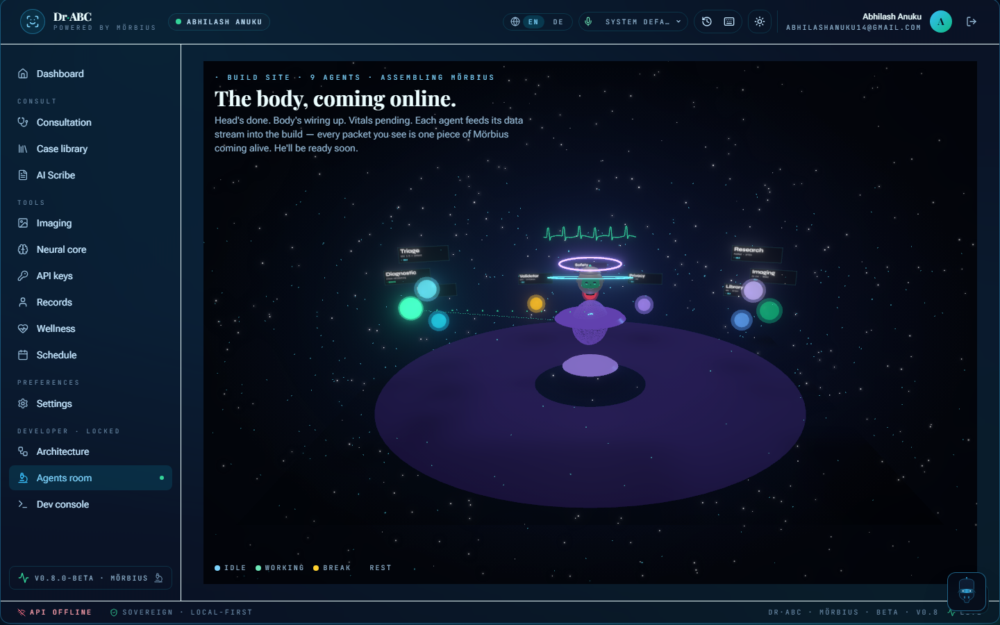
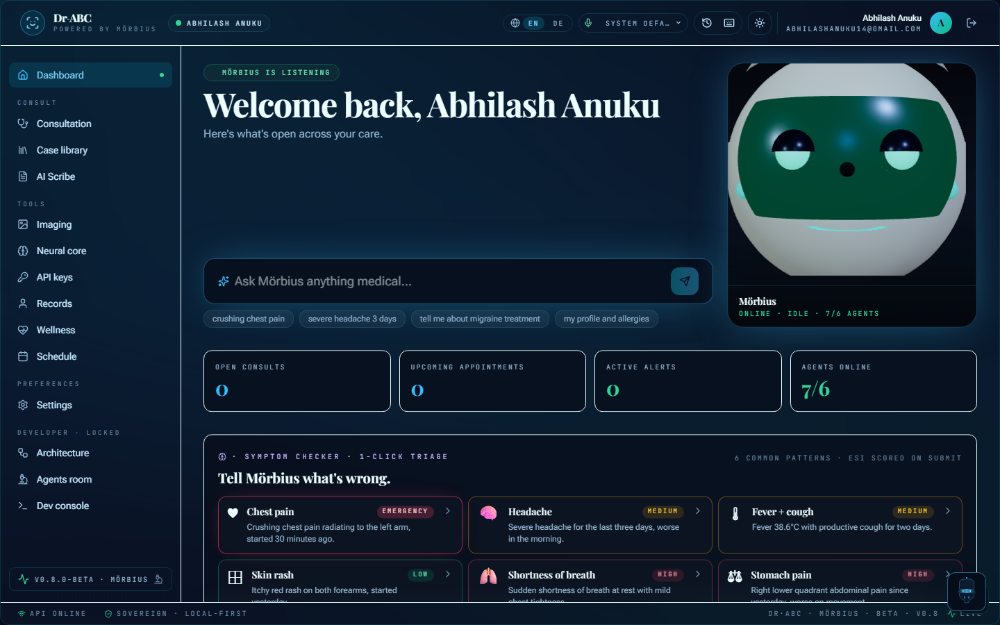
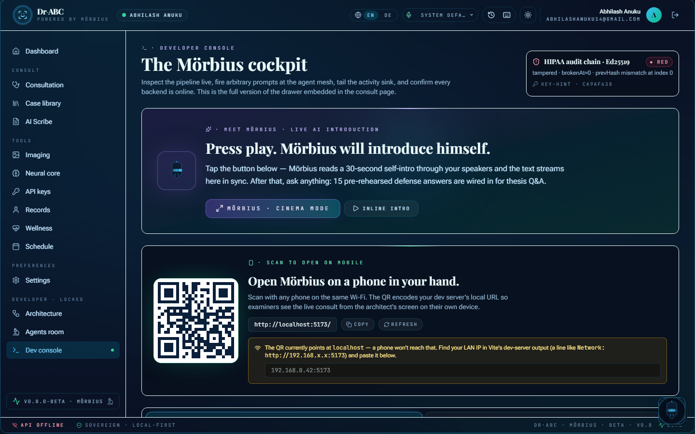

Dr·ABC
powered by Mörbius.
A multi-agent medical chat assistant — nine specialist agents, a living medical knowledge graph, and a safety-gated answer for every question.
Instead of one big model answering everything, Dr·ABC routes each consult through nine single-responsibility agents, grounds them in a typed knowledge graph, and gates every answer. Mörbius is the engine that makes it run.
one shared contract
grows nightly
cascade ensemble
across 43 files
local-first
Numbers from reproducible local runs (docs/status/) on small benchmark samples — a measure of direction, not clinical accuracy.
The product, screen by screen.
A React 19 single-page app with a bioluminescent medical-noir interface. Tap any screen to view it full-size.







One question, five brains, one safe answer.
A consult flows through a fixed pipeline. Each stage is a real subsystem in the repo.
Intent + routing
An intent classifier routes the consult to the right specialists.
RAG grounding
A Library agent pulls evidence from a pgvector corpus.
9 specialist agents
Diagnostic, imaging, knowledge-graph and others reason in parallel.
Secure Pass
A Validator gate today; Safety & Privacy gates scaffolded next.
Self-correction
Each gate failure becomes a bounded residual on the next answer.
Retrieval (RAG)
pgvector retriever with a BM25 fallback over a medical corpus.
Agentic reasoning
Nine agents on one typed BaseAgent contract.
Knowledge graph
Typed medical graph, 88 nodes, spreading activation.
Memory
Per-user IndexedDB with a Postgres mirror.
Self-learning
Boosting journal + a meta-agent that proposes tunes.
Secure Pass
Validator gate live; crisis language routes to a real helpline.
What's under the hood — and where to find it.
Six engineering ideas, each pointing at the exact place it lives in the codebase.
Multi-agent orchestration
Nine specialist agents share one typed contract behind a streaming orchestrator and an intent classifier.
packages/morbius-core · packages/agentsRetrieval-augmented generation
A pgvector retriever with a BM25 fallback grounds every answer in medical literature.
Medical knowledge graph
88 nodes / 84 edges, built by a diff-aware extract → build → cluster → activation pipeline.
packages/agents/src/knowledge-graphModel evaluation
Reproducible harnesses score the cascade ensemble: 74.5% MedQA, 74.0% MedMCQA.
scripts/medqa-harness.tsSelf-correcting learning
Boosting-inspired error correction turns each gate failure into a bounded, time-decayed residual.
packages/agents/src/boostingProduction engineering
620 tests, Biome-clean, a safety pipeline, CI checks and a multi-cloud free-tier deploy.
How it performs.
The cascade routes Ollama → NVIDIA NIM → HuggingFace → Anthropic and keeps the first non-empty differential. Numbers from local benchmark runs.
Accuracy
Benchmark samples, not clinical validation.
Engineering
TypeScript strict · Biome-clean. 5 diagnostic tests need a local Ollama (local-first).